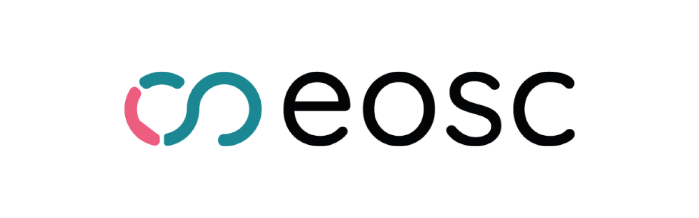

- Übersicht
- Beschreibung
- Deliverables
- Kontakt
“The ambition of the European Open Science Cloud (EOSC) is to develop ‘Web of FAIR Data and services’ for science in Europe. EOSC will be a multi-disciplinary environment where researchers can publish, find and re-use data, tools and services, enabling them to better conduct their work.” https://eosc.eu/about-eosc
Das Teilprojekt bzw. Arbeitspaket “EOSC” am ACDH-CH zielt darauf ab, die Integration der Initiative EOSC (European Open Science Cloud) und der österreichischen DH-Forschung voranzutreiben, dabei das Angebot und die Ergebnisse von EOSC in der österreichischen DH-Forschungslandschaft bestmöglich zu nutzen, sowie die Anknüpfung, Vernetzung und den Austausch mit der Vielzahl an beteiligten Akteuren im europäischen Raum zu fördern.
Auf technischer Ebene bedeutet Integration in dieser Phase insbesondere die Dissemination österreichischer Forschungsoutputs durch zentrale europäische Metadaten-Kataloge, allen voran OpenAIRE (Open Access Infrastructure for Research in Europe), um eine bessere Sicht- und Durchsuchbarkeit dieser Daten sicherzustellen. Diese ist eine Voraussetzung für das Teilen und die Nutzung von Daten und Services im gesamten europäischen Forschungsraum. Zu diesem Zweck wurden die Repositories ARCHE und GAMS mit OpenAIRE integriert (on-boarding), d.h. ihre Metadaten werden geharvested und können so als Teil des gesamten OpenAIRE Research Graph exploriert/erschlossen werden. Zusätzlich wurden sie registriert als Teil des DARIAH Community Gateway’s, so dass die Ressourcen aus diesen Repositorien als Teil von DARIAH Resources gelten. Dank seines Engagements in den Projekten EOSC Future und SSHOC konnte sich das ACDH-CH Team ideal positionieren, um die aktuellen Entwicklungen auf europäischer Ebene zu beobachten und auf nationaler und institutioneller Ebene zu vermitteln, bzw. einzusetzen.
Aktueller Stand: Die Situation bzgl. weiterer Entwicklung von EOSC ist nach dem Ende des EOSC-Future Projektes sehr volatil. Im Rahmen von Procurements wurden neue Betreiber für den Betrieb von zentralen Komponenten der EOSC-Infrastruktur ausgelobt, derzeit gibt es jedoch keine stabilen zentralen Services, bzw. klare Vorgaben zur Integration von lokalen, thematischen oder nationalen Services und Strukturen. Im Herbst 2024 soll im Rahmen des EOSC Symposiums die neue EOSC EU Node vorgestellt werden, welche zentrale Services bereitstellen wird.
In enger Absprache mit DARIAH, liegt daher der Fokus auf Integration von Services mit OpenAIRE und SSH Open Marketplace, in der Annahme, dass diese Systeme jedenfalls eine Rolle, in der sich derzeit neugestaltenden technischen Struktur von EOSC spielen werden. Das DiTAH-Teilprojekt “Repositorien-Discovery” hat sich in diesem Zusammenhang intensiv mit OpenAIRE und den damit verbundenen Möglichkeiten auseinandergesetzt.
Eine wichtige Rolle werden in diesem Kontext die neuen Infrastruktur-Projekte: ATRIUM, OSCARS, OS Trails, ECHOES, in denen DARIAH und tlw. auch das ACDH-CH involviert sind. Der veröffentlichte Bericht vom Oktober 2023 informiert über die Entwicklungen bei EOSC auf europäischer, sowie nationaler Ebene. ACDH-CH als affiliated entity von DARIAH im EOSC Future Projekt, war auch am Deliverables D6.2b zu "Workflows developed from the Moderation Process to Onboard External Providers" beteiligt.
Bis zum Ende des Projektes soll des Weiteren ein White Paper erstellt werden, welches die neuesten Entwicklungen sowie die aktuelle Situation zusammenfasst und Vorschläge für die Integration von DH-Aktivitäten in Österreich mit EOSC liefert.
